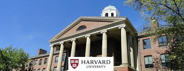
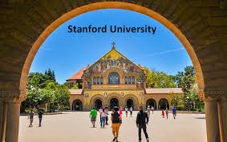
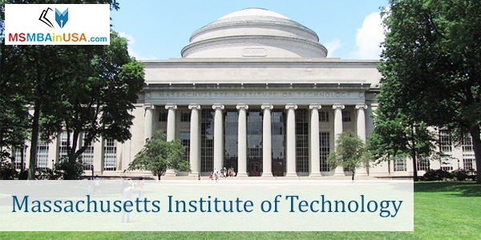
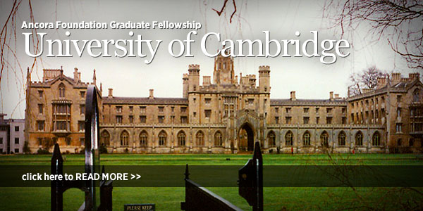
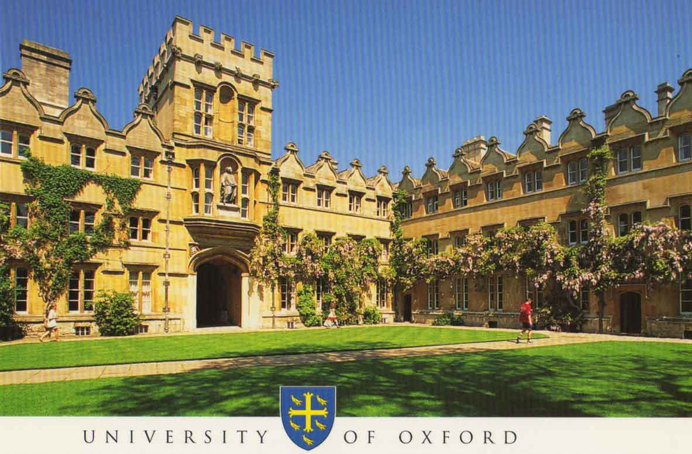

1. Harvard University |
Universitas Harvard secara konsisten masuk dalam jajaran 5 terbaik dunia. Universitas ini masih memegang indikator terbaik pertama di dunia untuk Reputasi Lulusan maupun akademik. Universitas ini memperoleh peringkat tertinggi untuk prodi Akutansi dan Keuangan, Ilmu Hukum, Bisnis dan Manajemen, Psikologi dan Ilmu Politik. Banyak para lulusan universitas ini meraih beragam penghargaan dunia seperti Nobel, Pulitzer atau Academy Awards. selengkapnya |
2. Stanford University |
Stanford merupakan salah satu kampus universitas terbesar di Amerika Serikat dan mempertahankan posisi terbaik mereka sebagai kampus riset untuk Pascasarjana Bisnis, Ilmu Bumi, Ilmu Energi dan Lingkungan, Pascasarjana Pendidikan, Teknik; Humaniora, Hukum dan Imu Kedokteran. selengkapnya |
3. Massachusetts Institute of Technology |
MIT tampaknya belum terkalahkan sebagai universitas berperingkat tertinggi di dunia dan selalu memegang posisi teratas untuk rekor 7 tahun berturut-turut. MIT mendapat skor Reputasi Akademik terbaik ke 3 di dunia dan Reputasi Lulusan terbaik ke 4 dunia. Inovasi, riset dan teknologi menjadi nilai utama dari universitas ini dengan 5 prodi unggulan Arsitektur dan Perencanaan, Teknik, Humaniora dan Seni, Ilmu sosial dan Manajemen serta Sains. selengkapnya |
4. University of Cambridge |
University of Cambridge didirikan tahun 1209. Jumlah mahasiswa di kampus ini mencapai 17.000 orang, dan 3.000 diantaranya adalah mahasiswa internasional. Universitas Cambridge sangat menonjol di bidang matematika. Mahasiswa harus mengikuti ujian masuk jika ingin mengambil jurusan Seni, yang merupakan jurusan andalan di Cambridge. Ada enam sekolah yang ditawarkan, yaitu Seni dan Humaniora, Ilmu Biologi, Klinik Kedokteran, Humaniora dan Ilmu Sosial, Ilmu Fisika, dan Teknologi. Masing-masing jurusan mencakup kelompok fakultas tertentu. selengkapnya |
5. University of Oxford |
Meskipun data tentang berdirinya universitas ini masih belum terungkap, sejarah keberadaan Oxford University sudah terlacak pada akhir abad ke-11. Universitas ini terletak di Wellington Square, Oxford dan saat ini memiliki 20.000 mahasiswa. Ada empat divisi akademik di sini, yaitu Humaniora, Ilmu Medis, Matematika, Fisika & Ilmu Alam, dan Ilmu Sosial. Beberapa program yang ditawarkan diantaranya, sains, biokimia, kimia, komputer, ornitologi, ilmu teknik, Studi Islam, Material, Matematika, dan lain-lain selengkapnya |